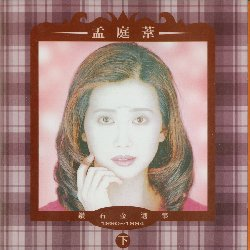
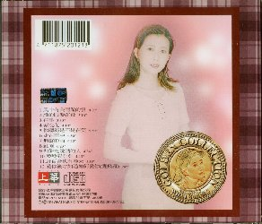

鑽石金選集 （下） １９９０～１９９４
| １９９４年１２月２２日 | 鑽石金選集 （下） １９９０～１９９４ | ＷＣＤ－２０８１
|
|---|
| 
| 上華（WHAT'S MUSIC INTERNATIONAL INCORPORATED.）
|
- 風中有（几／木）雨做的雲
4:20
- 誰的眼涙在飛
5:16
- 往事
3:50
- 紫浣花
4:14
- （イ尓）聴海是不是在笑
5:50
- 走在雨中
4:30
- 無聲的雨
4:35
- 紅雨
6:23
- 和餅乾説話的人
4:34
- （口亞）（口亞）與亞亞
4:43
- 野百合也有春天
3:33
- 愛（イ尓）後才知道如何愛（イ尓）（變飛雁）
3:42
|
| 
| これは、ベスト集のパート２です。
このＣＤのジャケットは、顔の色が落ちていてちょっと恐いです。
|